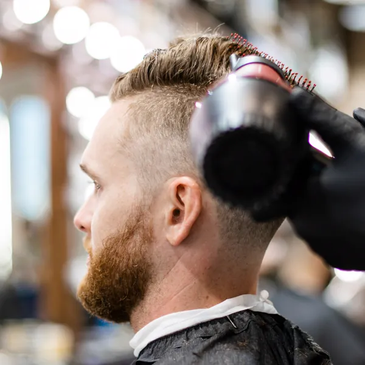
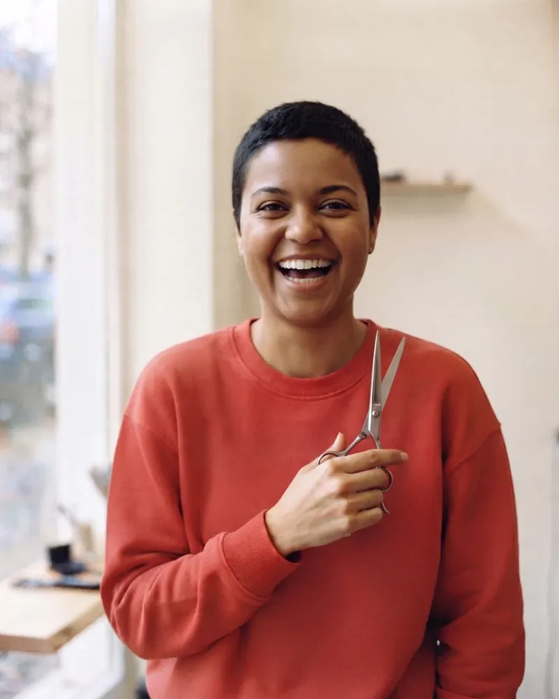
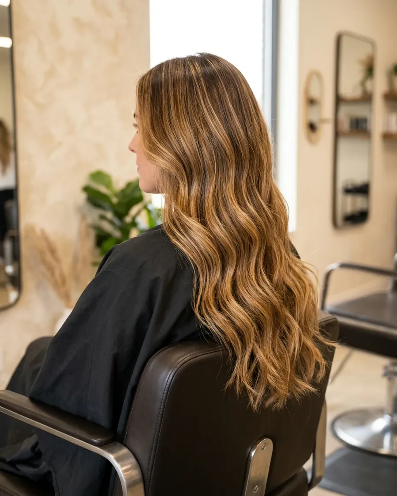
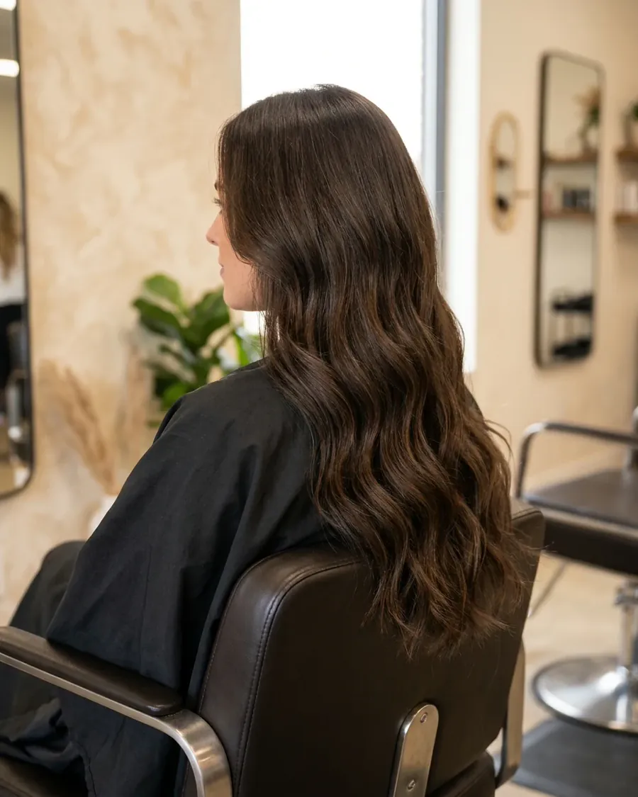
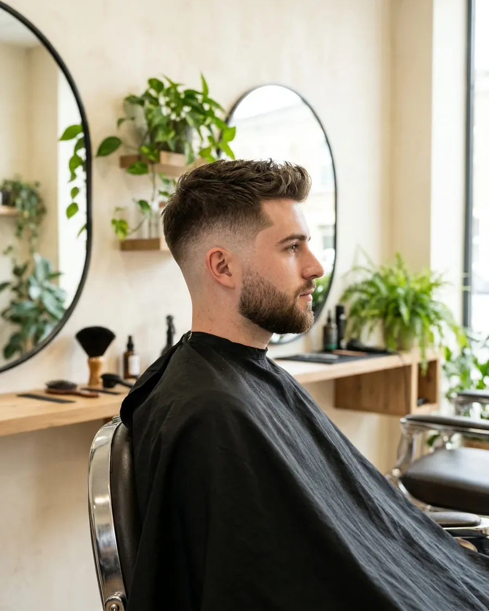
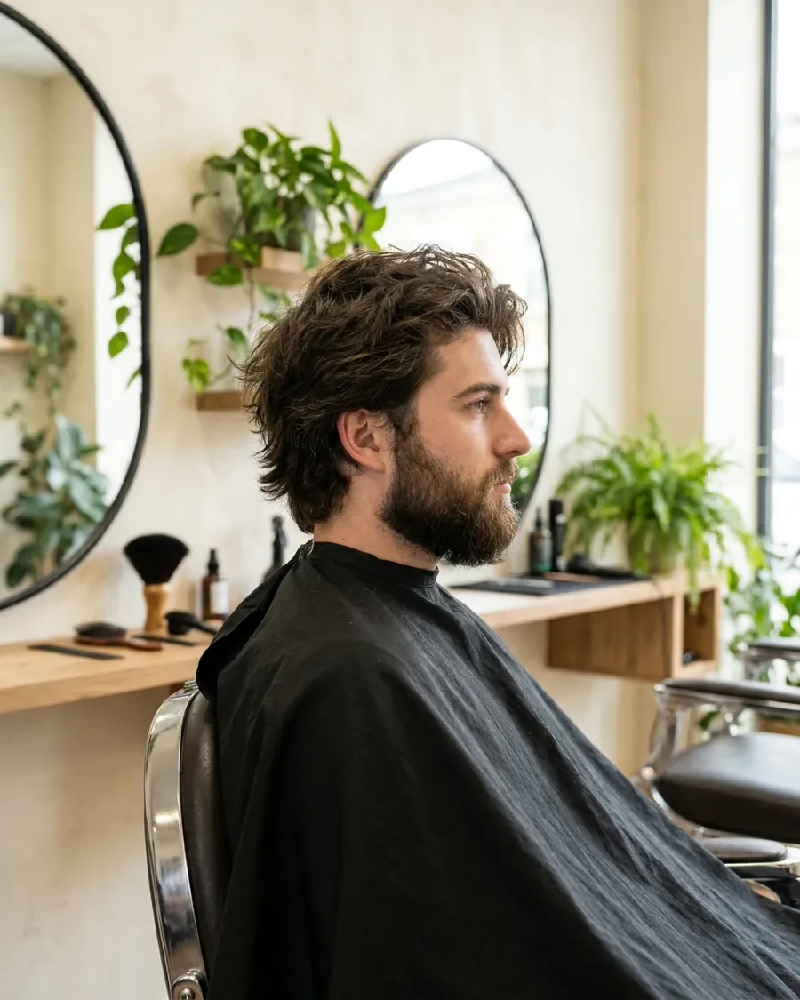
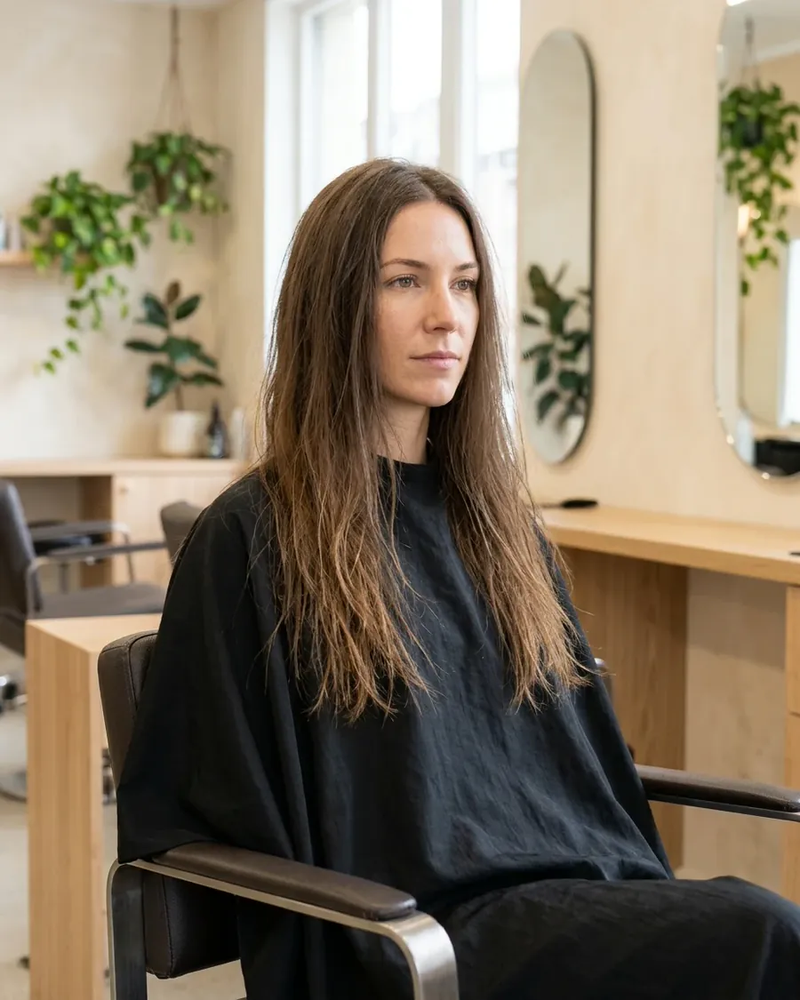
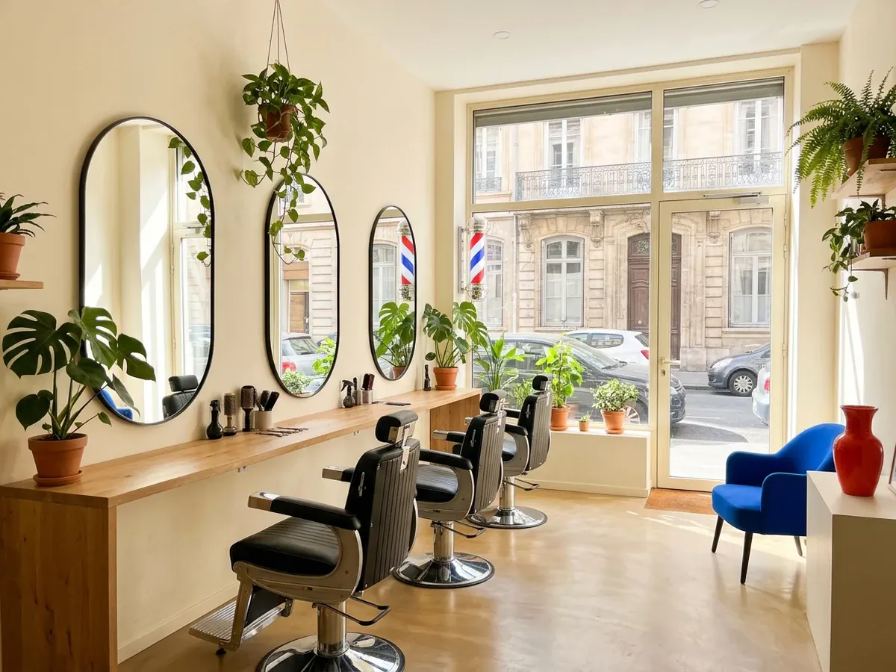

Coiffeur mixte & barbier · Croix-Rousse
Ça coupe, ça rase, ça repart heureux.
Coupes, barbes, couleurs et petites têtes : un salon de quartier en haut des pentes, sans chichis et avec le sourire.
- Horaires dans la section Infos
- 4,9/5 · 312 avis
- Métro C · Croix-Rousse

Les prestations
Des prix clairs, affichés.
Shampoing, soin et coiffage compris dans toutes les coupes. Choisissez, on s’occupe du reste.
Femme
Du carré net au long dégradé, on prend le temps d’écouter avant de couper.
-
45 min 39 €
Coupe & brushing, cheveux courts
Diagnostic, shampoing, coupe, coiffage
-
1 h 46 €
Coupe & brushing, mi-longs
Diagnostic, shampoing, coupe, coiffage
-
1 h 15 52 €
Coupe & brushing, longs
Diagnostic, shampoing, coupe, coiffage
-
30 min 25 €
Brushing seul
Shampoing et mise en forme
-
1 h dès 55 €
Coiffure d’événement
Chignon, ondulations, mariage (essai conseillé)
Homme
Classique aux ciseaux ou dégradé à blanc millimétré : vous ressortez net.
-
30 min 26 €
Coupe homme
Shampoing, coupe ciseaux ou tondeuse, coiffage
-
45 min 30 €
Coupe dégradé (fade)
Dégradé à blanc ou bas, finitions au rasoir
-
50 min 39 €
Coupe + barbe
La formule complète, serviette chaude incluse
-
15 min 16 €
Tondeuse, un seul sabot
Rapide et efficace
Barbe
Serviette chaude, huile, coupe-chou : le rituel du barbier, comme avant.
-
20 min 18 €
Taille de barbe
Mise en forme et contours
-
30 min 26 €
Barbe à l’ancienne
Serviette chaude, taille, rasoir, huile
-
30 min 28 €
Rasage complet au coupe-chou
Pour un visage parfaitement lisse
-
10 min 10 €
Contours seuls
Entre deux tailles
Couleur
Blonds lumineux, reflets subtils ou couleur franche, avec des produits à base végétale.
-
1 h 15 dès 42 €
Couleur racines
Hors coupe et brushing
-
1 h 30 dès 55 €
Couleur complète
Des racines aux pointes
-
2 h 30 dès 79 €
Balayage ou mèches
Éclaircissement à main levée, patine incluse
-
20 min 22 €
Patine (gloss)
Raviver ou neutraliser un reflet
Enfants
On prend le temps qu’il faut. Pour la toute première coupe, un diplôme est offert !
-
20 min 15 €
Coupe enfant, moins de 6 ans
Dans le fauteuil-voiture, avec patience
-
30 min 19 €
Coupe enfant, 6 à 12 ans
Shampoing et coupe
-
30 min 22 €
Coupe ado, jusqu’à 16 ans
Dégradé compris
Prix TTC. Étudiants : −10 % du mardi au jeudi, sur présentation de la carte.
L’équipe
Trois paires de ciseaux, zéro prise de tête.
-
Inès
Coloriste
Balayages, blonds lumineux et couleurs végétales. 12 ans de métier, zéro reflet jaune.
-
Malik
Barbier
Dégradés à blanc et barbes au coupe-chou. Sa serviette chaude a ses habitués.
-

Jo
Coupes courtes & enfants
Carrés, pixies et petites têtes. Les enfants repartent avec un diplôme… et l’envie de revenir.
Réalisations
Glissez pour voir la transformation.
De vraies séances, photographiées au salon. Faites glisser la poignée, ou utilisez les flèches du clavier.





Avis clients
Ils sont repartis heureux.
4,9 sur 5 · 312 avis Google
-
« Malik a sauvé ma barbe. Serviette chaude, café, discussion foot : je reviens toutes les trois semaines. »
-
« Enfin une coloriste qui écoute ! Inès m’a fait le balayage miel exactement comme sur ma photo. »
-
« Mon fils de 4 ans pleurait chez le coiffeur. Avec Jo, il est reparti avec un diplôme et réclame sa prochaine coupe. »
-
« Ambiance détendue, playlist au top et prix affichés. Aucune mauvaise surprise au moment de payer. »
-
« J’ai osé le carré court après dix ans de cheveux longs. Aucun regret, je me sens enfin moi-même. »
-
« Réservé en deux minutes, accueilli avec le sourire, et un rasage au coupe-chou comme je n’en avais jamais eu. »
Infos pratiques
Passez nous voir, en haut des pentes.
Consultez les horaires ci-dessous
18 rue d’Austerlitz
69004 Lyon · Croix-Rousse
Métro C, arrêt Croix-Rousse · 4 min à pied
04 65 71 48 26Horaires
| Lundi | Fermé |
|---|---|
| Mardi | 9h – 19h |
| Mercredi | 9h – 19h |
| Jeudi | 10h – 20h nocturne |
| Vendredi | 9h – 19h |
| Samedi | 8h30 – 18h |
| Dimanche | Fermé |
